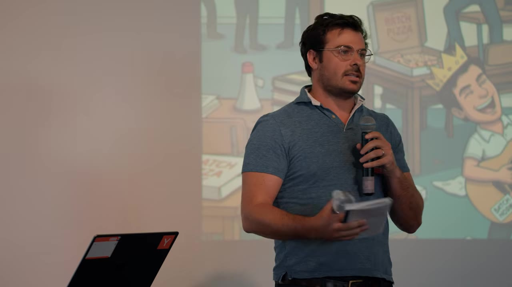
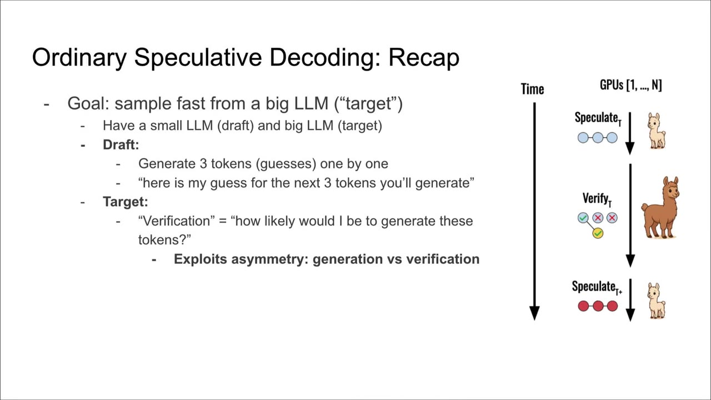
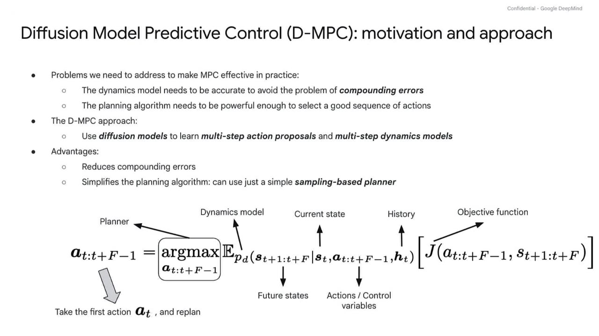
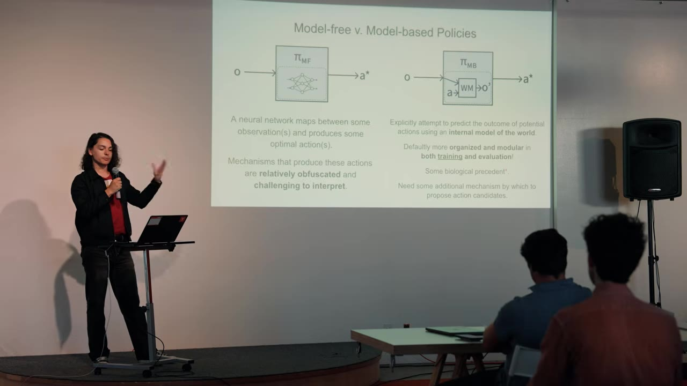
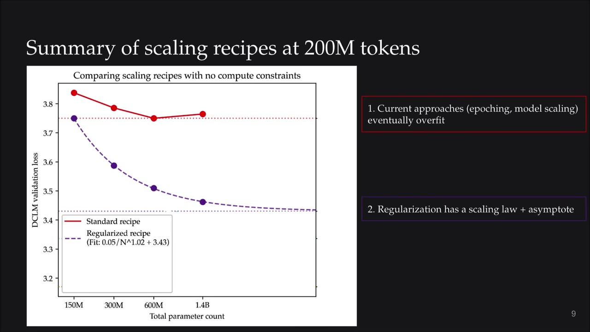

The first-ever YC Paper Club brings together researchers from DeepMind, Stanford, and YC startups to present five papers on speculative decoding, robotic control, world models, and data-efficient pre-training.
Watch on YouTubeMike Weiss (GSB) kicks off the inaugural YC Paper Club at Pioneer in Palo Alto, curating a room of researchers and founders — 1,000+ applicants, ~100 seats. The room is packed: people with 10k+ citations, founders who've raised $50M+. The hidden mission: revive the Pioneer community and pull together the Bay Area's dispersed AI talent (Anthropic, OpenAI, Cursor, Google DeepMind, Tesla, xAI, Thinking Machines).

The hidden mission is to make Pioneer great again.— GSB
Tanishk (Stanford grad student) presents SSD — a parallel speculative decoding algorithm that breaks the sequential bottleneck of vanilla speculative decoding. The core thesis: inference should be thought of as a capability, not just a cost lever. If a method's performance scales with the amount of thinking it does, then tokens/second is exactly the peak intelligence you can deliver.
Vanilla speculative decoding uses a small "draft" model to guess tokens, then a large "target" model verifies them in parallel. SSD parallelizes the drafting and verification across rounds — the draft model anticipates verification outcomes and starts drafting the next round while verification is still running.

In one, two, or three years inference is going to be seen as a capability.— Tanishk
Stannis (research scientist, Google DeepMind) presents DMPC — using diffusion models to learn both multi-step action proposals and multi-step dynamics models for robotic control. The insight: diffusion models, originally designed for images and video, are powerful multi-modal distributions that can model complex action spaces without requiring expert demonstrations.
DMPC factorizes the problem into an action proposal module and a dynamics model, then uses a simple sampling-based planner. This lets it adapt to novel rewards and novel dynamics at runtime — something joint-model approaches can't do.

We can just use a very simple sampling-based planner and we can already outperform a lot of the previous approaches.— Stannis
Isaac Ward presents work from Yanjun Liu's group on Lay World Model, which tackles representation collapse — the fundamental optimization problem in world-model training where the model learns that "every state is the same." The solution: a single regularization term called Sigg (Sketching as Isotropic Gaussian) that ensures latent embeddings stay in a healthy Gaussian distribution with one hyperparameter and one loss term.
The paper compares model-free vs. model-based approaches to agent control. Lay World Model sits firmly in the model-based camp, using JEEP (Joint Embedding Predictive Architecture) to predict next-step latent embeddings in action-conditioned encoder spaces.

Are we going to go with model-based or model-free? Are our agents going to have an internal model of the world or are they not? This is being fought out right now in both research and the startup community.— Isaac Ward
Ku presents work on what to do when you have a fixed dataset and infinite compute — a regime that's approaching reality as internet text data grows ~3% per year while pre-training compute grows ~4–5x annually. The answer: revisit classical ML ideas.
The paper shows that when you're data-constrained, aggressive regularization (weight decay ~30x standard) lets you keep scaling model size without overfitting. Even better: ensembling multiple smaller models beats one giant model at the same parameter count. Combining regularization + ensembling ("joint scaling") gives ~5x data efficiency over the standard recipe.

The only way that we get improvements in learning efficiency is through inductive biases. The massive sample-efficiency gap between AI and humans means we might see massive gains in capability if we work on this problem.— Ku
:::